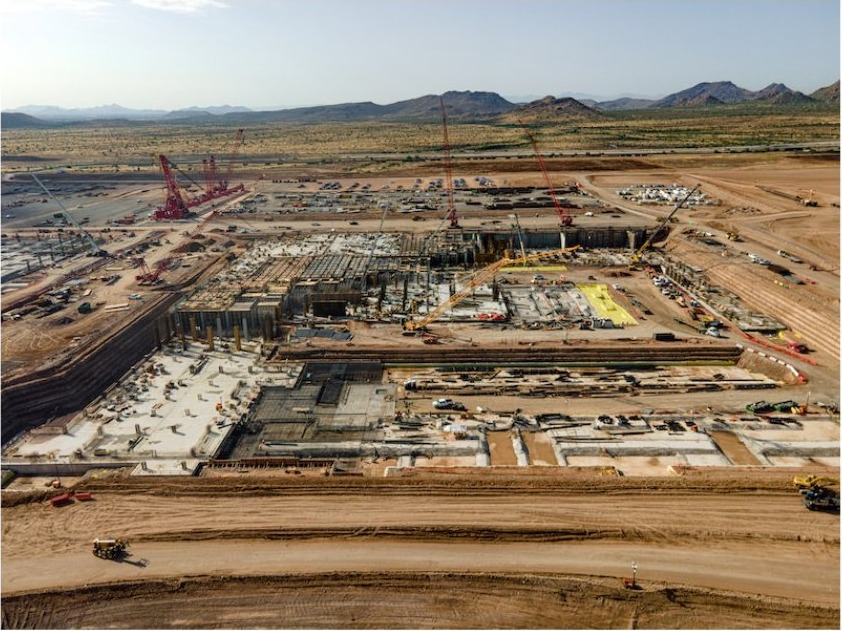
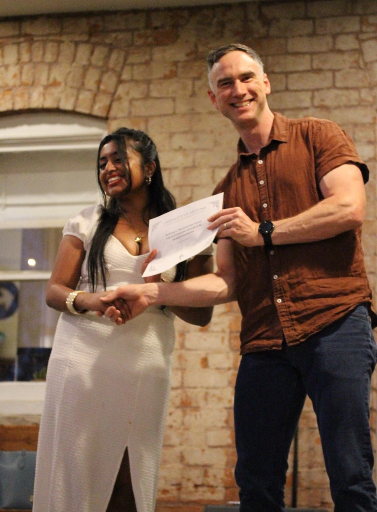
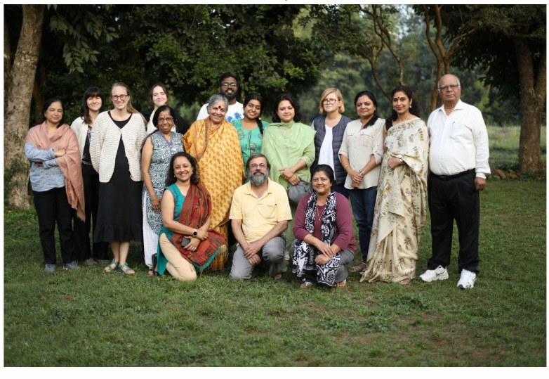
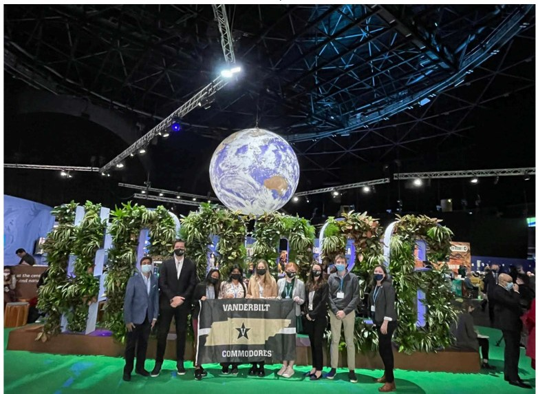
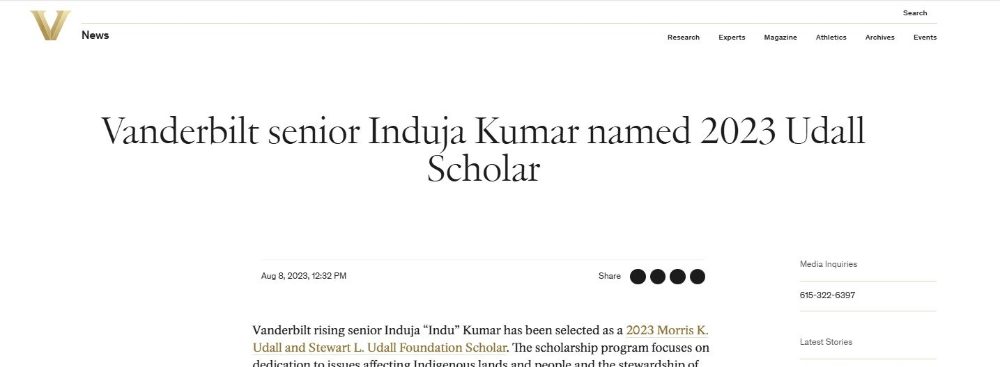

Spanning a wide breadth, my research centers on understanding the role of labor in defining the current historical conjuncture, both the present scope of possibilities and a path forward for collective human progress.
A new deal for the silicon desert: labor, reindustrialization, and how workers can share in the benefits that AI promises to bring.
My thesis investigates the TSMC Arizona plant in North Phoenix, the first time highly advanced chips will be manufactured on U.S. soil. The move of chip manufacturing, driven by escalating tensions with China, is part of a broader effort to reindustrialize the U.S. and “bring back good jobs” for Americans. I am conducting a labor ethnography of semiconductor workers being trained to work in advanced manufacturing on a highly automated fab floor.

The questions I seek to answer: Who are the workers making arguably the most important commodity of the AI era, and why did they switch careers to become semiconductor technicians? How have they experienced pathways to upskilling on the fab floor, and do they feel they actually built a skill and got a more rewarding job? And how does local, empirical data on the efficacy of upskilling and this reindustrialization project inform the greater geopolitical tensions reshaping American economics, production, and industrial policy?

Much of my undergraduate research focused on understanding labor in relation to the polycrisis of climate change and emerging technologies.
Under Pulitzer Prize winner Jefferson Cowie, I investigated how the closing of extractive sectors such as oil and mining created reactionary populist effects among the workers affected, globally. In other words, how the green-energy transition produces reactionary impulses among workers across differing global contexts.

Selected as the only undergraduate on a Fulbright-Hays Group Project Abroad, I studied how farmers and indigenous communities in North India were adapting to climate-change impacts. The “authentic resources” we collected were used for Hindi-language learning in U.S. academic institutions, teaching the language while speaking to an issue students might already care about, in a global context.

I was selected to participate in the annual Conference of Parties 26 in Glasgow, where I presented a paper alongside a transinstitutional team on methods to promote regreening in cities without negatively affecting working-class communities and neighborhoods.
At Vanderbilt's Climate, Health, Energy, and Equity Lab (CHEEL), I led a team of students investigating how carbon credits could be used to subsidize working mothers' ability to breastfeed, brainstorming ways corporations could give time off to working mothers while meeting their ESG goals.
As a Buchanan Fellow, I researched the best methods for consumers and internet users to enact digital privacy amid increasing surveillance, and compiled resources for library patrons.
